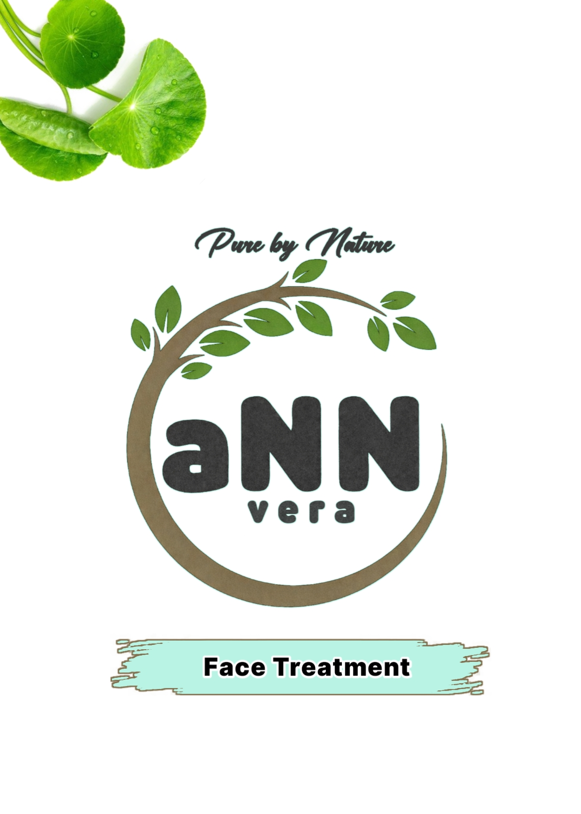

FAQ Face treatment Centella
Produk ini berbahan apa ?
Produk ini dibuat dari kaolin clay dan bubuk Centella Asiatica (pegagan) yang kami olah sendiri, dikombinasikan dengan bahan pilihan dari petani lokal.
Apa manfaatnya ?
Produk ini dapat membantu membersihkan pori-pori, menyerap minyak berlebih, menenangkan kulit, serta membantu merawat kulit berjerawat dan kusam.
Untuk kulit apa ?
Cocok untuk kulit berminyak, kombinasi, dan normal. Untuk kulit sensitif, kami sarankan melakukan tes tempel (patch test) terlebih dahulu.
Apakah aman untuk kulit berjerawat ?
Aman untuk kulit berjerawat ringan. Formulasi berbahan alami dan tanpa bahan keras. Untuk kulit sensitif, tetap disarankan tes dulu sebelum pemakaian rutin.
Apakah mengandung bahan kimia ?
Tidak. Produk ini tidak mengandung merkuri, hidroquinon, pewarna sintetis, maupun parfum buatan.
Saran pemakaian ?
Disarankan digunakan 2 kali seminggu untuk hasil yang lebih optimal.
Apakah bisa dipakai cowok dan cewek ?
Ya, masker ini aman digunakan oleh cowok maupun cewek.
Apakah sudah BPOM ?
Saat ini produk kami merupakan produk handmade skala rumahan dan belum terdaftar BPOM, namun dibuat dengan standar kebersihan dan bahan yang aman.


FAQ Produk Jamu Herbal
🌿 Herbal Alami
✅ Tanpa Oplosan
🍯 Manis Alami
Umum
Dabu
Rareco
Focca
Apa itu jamu DABU?
Jamu DABU adalah jamu herbal modern berbentuk bubuk instan dengan rasa manis alami, diformulasikan sebagai daily booster untuk membantu menjaga stamina, pencernaan, dan kebugaran tubuh sehari-hari.
Apa komposisinya?
• Temulawak 35%
• Jahe merah 25%
• Kunyit 20%
• Pemanis alami 20%
• Jahe merah 25%
• Kunyit 20%
• Pemanis alami 20%
Manfaat jamu DABU?
✔ Membantu menjaga stamina harian
✔ Membantu melancarkan pencernaan
✔ Mendukung kesehatan liver & metabolisme
✔ Mengurangi rasa lelah ringan
✔ Membantu melancarkan pencernaan
✔ Mendukung kesehatan liver & metabolisme
✔ Mengurangi rasa lelah ringan
Cocok untuk?
• Pekerja aktif
• Orang yang sering capek ringan
• Yang ingin jaga daya tahan tubuh
• Orang yang sering capek ringan
• Yang ingin jaga daya tahan tubuh
Aturan minum Jamu DABU?
• 3–4 kali per minggu, diminum pagi hari.
Apa itu jamu RARECO?
Jamu RARECO adalah jamu herbal pemulih tubuh dengan dominasi jahe merah, dirancang khusus untuk membantu menghangatkan tubuh, mempercepat pemulihan, dan mengurangi rasa pegal setelah aktivitas fisik.
Apa komposisinya?
• Jahe merah 30%
• Kunyit 25%
• Temulawak 25%
• Serai 10%
• Pemanis alami 10%
• Kunyit 25%
• Temulawak 25%
• Serai 10%
• Pemanis alami 10%
Manfaat jamu RARECO?
✔ Membantu mengurangi pegal & capek
✔ Menghangatkan tubuh
✔ Membantu melancarkan peredaran darah
✔ Mendukung pemulihan stamina
✔ Menghangatkan tubuh
✔ Membantu melancarkan peredaran darah
✔ Mendukung pemulihan stamina
Cocok untuk?
• Pekerja lapangan
• Olahragawan ringan
• Orang yang sering badan pegal & capek
• Olahragawan ringan
• Orang yang sering badan pegal & capek
Aturan minum Jamu RARECO?
• 2-3 kali per minggu.
• Diminum setelah aktivitas berat atau malam hari
• Diminum setelah aktivitas berat atau malam hari
Apa itu jamu FOCCA?
Jamu FOCCA adalah jamu herbal modern dengan dominasi Centella (pegagan) yang diformulasikan untuk membantu menenangkan pikiran, menjaga fokus, dan membantu tubuh lebih rileks secara alami. Cocok diminum saat butuh konsentrasi, kerja mental, atau saat pikiran terasa penat.
Apa komposisinya?
• Centella (pegagan) 35%
• Jahe 25%
• Temulawak 20%
• Pemanis alami 20%
• Jahe 25%
• Temulawak 20%
• Pemanis alami 20%
Manfaat jamu FOCCA?
✔ Membantu meningkatkan fokus
✔ Menenangkan pikiran
✔ Membantu mengurangi stres ringan
✔ Mendukung sirkulasi darah ke otak
✔ Menenangkan pikiran
✔ Membantu mengurangi stres ringan
✔ Mendukung sirkulasi darah ke otak
Cocok untuk?
• Pekerja kantoran
• Pelajar / mahasiswa
• Orang yang sering overthinking ringan
• Pelajar / mahasiswa
• Orang yang sering overthinking ringan
Aturan minum Jamu FOCCA?
• 2-3 kali per minggu.
• Diminum saat butuh fokus atau sore hari
• Diminum saat butuh fokus atau sore hari
Ini jamu apa sih?
Jamu herbal bubuk instan dengan rasa manis alami dari bahan herbal pilihan.
Apa bedanya dengan jamu tradisional?
Lebih praktis, rasa lebih ramah di lidah, tanpa menghilangkan manfaat herbal.
Manisnya dari apa?
Dari gula aren, kayu manis, atau daun stevia.
Siapa yang boleh minum?
Pria dan wanita dewasa.
Aman untuk maag / darah tinggi / diabetes?
Relatif lebih aman karena pemanis alami, tetap sesuaikan kondisi tubuh.
Boleh air dingin?
Boleh, tapi lebih disarankan air hangat.